This example simulates a basic calculator with four operations.
Note: This is a very long program. Maybe you can not understand it clearly. You can just import this example to feel the power of Dynamic Art for iOS.
---------- Startup ---------- Turn off auto refresh Hide Clear by color #RGB(FFFFFF) HSB(0000FF) A(FF)# Refresh Set line color #RGB(0) HSB(000000) A(FF)# Set line width 5 Set font !Courier-Bold! Set font size 100 Set value of @origin x@ to [ [ $screen width$ / 2 ] - 300 ] Set value of @origin y@ to [ [ $screen height$ / 2 ] - 180 ] Set fill color #RGB(EFFF) HSB(82FFFF) A(FF)# Loop @number@ from 1 to 9 step 1 Set value of @index x@ to [ [ $number$ - 1 ] mod 3 ] Set value of @index y@ to [ [ [ $number$ - $index x$ ] - 1 ] / 3 ] Set value of @inner origin x@ to [ $origin x$ + [ $index x$ X 120 ] ] Set value of @inner origin y@ to [ $origin y$ + [ $index y$ X 120 ] ] Rect at x $inner origin x$ y $inner origin y$ width 120 heigth 120 Write $number$ at center x [ $inner origin x$ + 60 ] y [ $inner origin y$ + 60 ] End Set value of @lower origin y@ to [ $origin y$ + 360 ] Rect at x $origin x$ y $lower origin y$ width 120 heigth 120 Write "." at center x [ $origin x$ + 60 ] y [ $lower origin y$ + 60 ] Rect at x [ $origin x$ + 120 ] y $lower origin y$ width 120 heigth 120 Write "0" at center x [ $origin x$ + 180 ] y [ $lower origin y$ + 60 ] Rect at x [ $origin x$ + 240 ] y $lower origin y$ width 120 heigth 120 Write "<" at center x [ $origin x$ + 300 ] y [ $lower origin y$ + 60 ] Set value of @right origin x@ to [ $origin x$ + 360 ] Rect at x $right origin x$ y $origin y$ width 120 heigth 120 Write "+" at center x [ $right origin x$ + 60 ] y [ $origin y$ + 60 ] Rect at x [ $right origin x$ + 120 ] y $origin y$ width 120 heigth 120 Write "-" at center x [ $right origin x$ + 180 ] y [ $origin y$ + 60 ] Rect at x $right origin x$ y [ $origin y$ + 120 ] width 120 heigth 120 Write "*" at center x [ $right origin x$ + 60 ] y [ $origin y$ + 180 ] Rect at x [ $right origin x$ + 120 ] y [ $origin y$ + 120 ] width 120 heigth 120 Write "/" at center x [ $right origin x$ + 180 ] y [ $origin y$ + 180 ] Rect at x $right origin x$ y [ $origin y$ + 240 ] width 240 heigth 120 Write "=" at center x [ $right origin x$ + 120 ] y [ $origin y$ + 300 ] Rect at x $right origin x$ y [ $origin y$ + 360 ] width 240 heigth 120 Write "Clr" at center x [ $right origin x$ + 120 ] y [ $origin y$ + 420 ] Set fill color #RGB(EFFF00) HSB(2DFFFF) A(FF)# Set value of @has point@ to False Set value of @integer@ to 0 Set value of @symbol@ to "" Set value of @has symbol@ to False Set value of @overflow@ to False Perform (Flip) ---------- Blockette Flip ---------- Rect at x $origin x$ y [ $origin y$ - 120 ] width 600 heigth 120 If $overflow$ Write "Overflow" at origin x [ $origin x$ + 60 ] y [ $origin y$ - 120 ] Set value of @overflow@ to False Else If $has symbol$ Write $symbol$ at origin x [ $origin x$ + 5 ] y [ $origin y$ - 120 ] End Perform (Make string) Write $string$ at origin x [ $origin x$ + 60 ] y [ $origin y$ - 120 ] Set value of @show result@ to False End Refresh ---------- Blockette Add Digit ---------- Perform (Make string) Split $string$ to list {tmp} with delimiter "" If [ [ Length of list {tmp} ] < 9 ] If $has point$ Add $digit$ to list {after point} Else Set value of @integer@ to [ [ $integer$ X 10 ] + $digit$ ] End Perform (Flip) End---------- Blockette Remove digit ---------- If [ Not [ $show result$ or $overflow$ ] ] Perform (Is empty) If [ $has symbol$ and $empty$ ] Set value of @integer@ to $integer 2$ Set value of @has point@ to $has point 2$ Copy list {after point 2} to list {after point} Set value of @has symbol@ to False Else If $has point$ If [ [ Length of list {after point} ] = 0 ] Set value of @has point@ to False Else Remove last item of list {after point} End Else Set value of @integer@ to [ [ $integer$ - [ $integer$ mod 10 ] ] / 10 ] End End End Perform (Flip) ---------- Blockette Add point ---------- If [ Not $has point$ ] Set value of @has point@ to True Clear list {after point} End Perform (Flip) ---------- Blockette Make string ---------- If $has point$ Set value of @string@ to [ Join [ Join $integer$ and "." ] and [ Join list {after point} with delimiter "" ] ] Else Set value of @string@ to $integer$ End---------- Blockette Set symbol ---------- If $has symbol$ Perform (Calculate) End Set value of @symbol@ to $coming symbol$ Set value of @has symbol@ to True Perform (Flip) Set value of @show result@ to True Set value of @integer 2@ to $integer$ Set value of @has point 2@ to $has point$ Copy list {after point} to list {after point 2} Perform (Clear number) ---------- Blockette Calculate ---------- Perform (Make string) Perform (Make string 2) If [ $symbol$ = "+" ] Set value of @output@ to [ $string 2$ + $string$ ] End If [ $symbol$ = "-" ] Set value of @output@ to [ $string 2$ - $string$ ] End If [ $symbol$ = "*" ] Set value of @output@ to [ $string 2$ X $string$ ] End If [ $symbol$ = "/" ] Set value of @output@ to [ $string 2$ / $string$ ] End Split $output$ to list {tmp} with delimiter "." Set value of @integer@ to [ 0 th of list {tmp} ] Clear list {after point} If [ [ Length of list {tmp} ] = 2 ] Split $integer$ to list {integer list} with delimiter "" Set value of @after point length@ to [ 8 - [ Length of list {integer list} ] ] Split [ 1 th of list {tmp} ] to list {after point tmp} with delimiter "" If [ [ Length of list {after point tmp} ] > $after point length$ ] If [ [ $after point length$ th of list {after point tmp} ] >= 5 ] Replace [ $after point length$ - 1 ] th of list {after point tmp} with [ [ [ $after point length$ - 1 ] th of list {after point tmp} ] + 1 ] Loop @index@ from [ $after point length$ - 1 ] to 0 step -1 If [ [ $index$ th of list {after point tmp} ] < 10 ] Break End Replace $index$ th of list {after point tmp} with [ [ $index$ th of list {after point tmp} ] - 10 ] If [ $index$ > 0 ] Replace [ $index$ - 1 ] th of list {after point tmp} with [ [ [ $index$ - 1 ] th of list {after point tmp} ] + 1 ] Else Set value of @integer@ to [ $integer$ + 1 ] End End End Loop @index@ from [ $after point length$ - 1 ] to 0 step -1 If [ Not [ $index$ th of list {after point tmp} ] = 0 ] Break End Set value of @after point length@ to [ $after point length$ - 1 ] End Else Set value of @after point length@ to [ Length of list {after point tmp} ] End If [ $after point length$ = 0 ] Set value of @has point@ to False Else Set value of @has point@ to True Loop @index@ from 0 to [ $after point length$ - 1 ] step 1 Add [ $index$ th of list {after point tmp} ] to list {after point} End End Else Set value of @has point@ to False End Set value of @has symbol@ to False If [ [ 1000000000 <= $integer$ ] or [ -100000000 >= $integer$ ] ] Perform (Clear number) Set value of @overflow@ to True End---------- Blockette Make string 2 ---------- If $has point 2$ Set value of @string 2@ to [ Join [ Join $integer 2$ and "." ] and [ Join list {after point 2} with delimiter "" ] ] Else Set value of @string 2@ to $integer 2$ End---------- Blockette Is empty ---------- Set value of @empty@ to [ [ $integer$ = 0 ] and [ Not $has point$ ] ] ---------- Blockette Clear number ---------- Set value of @integer@ to 0 Set value of @has point@ to False Clear list {after point} ---------- Blockette Clear ---------- If [ Not [ $show result$ or $overflow$ ] ] Perform (Is empty) If [ $has symbol$ and $empty$ ] Set value of @integer@ to $integer 2$ Set value of @has point@ to $has point 2$ Copy list {after point 2} to list {after point} Set value of @has symbol@ to False Else Perform (Clear number) End End Perform (Flip) ---------- When touch begin ---------- Set value of @current touch x@ to $touch x$ Set value of @current touch y@ to $touch y$ If [ Is x $current touch x$ y $current touch y$ in rect x $origin x$ y $origin y$ w 360 h 360 ] Set value of @current touch x@ to [ $current touch x$ - $origin x$ ] Set value of @current touch y@ to [ $current touch y$ - $origin y$ ] Set value of @touch index x@ to [ floor ( [ $current touch x$ / 120 ] ) ] Set value of @touch index y@ to [ floor ( [ $current touch y$ / 120 ] ) ] Set value of @digit@ to [ [ [ $touch index y$ X 3 ] + $touch index x$ ] + 1 ] Perform (Add Digit) End If [ Is x $current touch x$ y $current touch y$ in rect x $origin x$ y $lower origin y$ w 120 h 200120 ] Perform (Add point) End If [ Is x $current touch x$ y $current touch y$ in rect x [ $origin x$ + 120 ] y $lower origin y$ w 120 h 120 ] Set value of @digit@ to 0 Perform (Add Digit) End If [ Is x $current touch x$ y $current touch y$ in rect x [ $origin x$ + 240 ] y $lower origin y$ w 120 h 120 ] Perform (Remove digit) End If [ Is x $current touch x$ y $current touch y$ in rect x $right origin x$ y $origin y$ w 120 h 120 ] Set value of @coming symbol@ to "+" Perform (Set symbol) End If [ Is x $current touch x$ y $current touch y$ in rect x [ $right origin x$ + 120 ] y $origin y$ w 120 h 120 ] Set value of @coming symbol@ to "-" Perform (Set symbol) End If [ Is x $current touch x$ y $current touch y$ in rect x $right origin x$ y [ $origin y$ + 120 ] w 120 h 120 ] Set value of @coming symbol@ to "*" Perform (Set symbol) End If [ Is x $current touch x$ y $current touch y$ in rect x [ $right origin x$ + 120 ] y [ $origin y$ + 120 ] w 120 h 120 ] Set value of @coming symbol@ to "/" Perform (Set symbol) End If [ Is x $current touch x$ y $current touch y$ in rect x $right origin x$ y [ $origin y$ + 240 ] w 240 h 120 ] If $has symbol$ Perform (Calculate) Perform (Flip) End End If [ Is x $current touch x$ y $current touch y$ in rect x $right origin x$ y [ $origin y$ + 360 ] w 240 h 120 ] Perform (Clear) End
Circle Spire
A circle spiring out with border of all colors. Its trail is so gentle that the whole image looks like a magic light spreading out from the very center.
---------- Startup ---------- Hide Pen up Set fill color #RGB(0) HSB(000000) A(FF)# Set value of @rounds@ to 150 Set value of @size@ to 60 Set value of @r@ to 20 Set value of @a@ to 0 Set value of @r step@ to [ $size$ / $rounds$ ] Set value of @a step@ to [ 360 / $rounds$ ] While [ $r$ < 700 ] do Set line color [ Color of red [ Random of 150 to 255 ] green [ Random of 150 to 255 ] blue [ Random of 150 to 255 ] Alpha 255 ] Go home Turn right $a$ Move forward $r$ Ellipse at center x $current x$ y $current y$ radius h $size$ v $size$ Set value of @r@ to [ $r$ + $r step$ ] Set value of @a@ to [ $a$ + $a step$ ] End
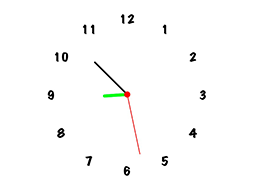
Clock
This example simulates a classic clock with three colorful hands: the green hour hand, the black minute hand and the red second hand.
---------- Startup ---------- Turn off auto refresh Hide Clear by color #RGB(FFFFFF) HSB(0000FF) A(FF)# Pen up Set line color #RGB(0) HSB(000000) A(FF)# Set line join type Round Set font size 40 Set font !MarkerFelt-Wide! Loop @dynamic@ from 1 to 12 step 1 Turn right 30 Move forward 250 Write $dynamic$ at center x $current x$ y $current y$ Move backward 250 End Pen down Loop forever Set value of @second@ to [ [ Second ] X 6 ] Set value of @minute@ to [ [ [ Minute ] X 6 ] + [ $second$ / 60 ] ] Set value of @hour@ to [ [ [ Hour ] X 30 ] + [ $minute$ / 12 ] ] Set line width 0 Set fill color #RGB(FFFFFF) HSB(0000FF) A(FF)# Ellipse at center x $current x$ y $current y$ radius h 210 v 210 Set line width 10 Set line color #RGB(FF1E) HSB(5AFFFF) A(FF)# Turn right $hour$ Move forward 75 Move backward 75 Turn left $hour$ Set line width 5 Set line color #RGB(0) HSB(000000) A(FF)# Turn right $minute$ Move forward 150 Move backward 150 Turn left $minute$ Set line width 2 Set line color #RGB(FF0000) HSB(00FFFF) A(FF)# Turn right $second$ Move forward 200 Move backward 200 Turn left $second$ Set line width 0 Set fill color #RGB(FF0000) HSB(00FFFF) A(FF)# Ellipse at center x $current x$ y $current y$ radius h 10 v 10 Refresh Wait 0.75 seconds End
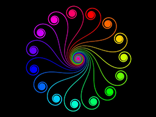
Color Feathers
This example draws a 16-colored cycle as 16 smooth curves. These curves look like bird feathers.
---------- Startup ---------- Hide Set line join type Round Loop @outer@ from 0 to 359 step 24 Set line width 0.5 Set line color [ Color of hue [ [ $outer$ / 360 ] X 256 ] saturation 255 brightness 255 Alpha 255 ] Pen up Go home Turn right $outer$ Pen down Loop @angle@ from 120 to -120 step -0.5 If [ $angle$ < 20 ] Set line width [ [ 25 - $angle$ ] / 10 ] End Move forward [ [ 120 - [ abs ( $angle$ ) ] ] / 12 ] Turn right $angle$ End End
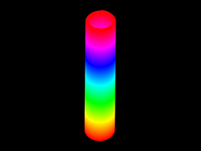
Color Tower
Color can grow, from the bottom of your screen to the top. This examples creates a growing cylinder with all bright colors. Want to have a look? Please press the button "Open".
---------- Startup ---------- Hide Pen up Move backward 225 Turn left 90 Pen down Set line width 10 Loop @hue@ from 0 to 255 step 1 Set line color [ Color of hue $hue$ saturation 255 brightness 255 Alpha 255 ] Loop @dynamic@ from -180 to 179 step 1 Move forward [ [ [ abs ( [ cos ( $dynamic$ ) ] ) ] X 1.5 ] + [ $dynamic$ / 10000 ] ] Turn left 1 End End
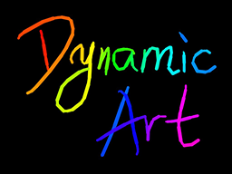
Colorful Paint
This is a simple interaction example. Just drug on the screen and enjoy the trails you create with your finger!
Attractive Point: Very amazing gradient color and automatically changed line-width.
---------- Startup ---------- Set line join type Round Set value of @hue@ to 0 ---------- When touch move ---------- Set line color [ Color of hue $hue$ saturation 250 brightness 255 Alpha 255 ] Set line width [ [ atan ( [ [ Distance from x $previous touch x$ y $previous touch y$ to x $touch x$ y $touch y$ ] / 10 ] ) ] / 5 ] Line from x $previous touch x$ y $previous touch y$ to x $touch x$ y $touch y$ Set value of @hue@ to [ [ $hue$ + 1 ] mod 255 ]
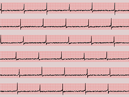
Electrocardiogram
This example simulates the electrocardiogram printed in a hospital. It uses a math function combined with random numbers to produce the waveform.
---------- Startup ---------- Turn off auto refresh Hide Clear by color #RGB(E1CFCF) HSB(0014E1) A(FF)# Refresh Loop @y base@ from 88 to $screen height$ step 128 Set line width 1.5 Set line color #RGB(FF6868) HSB(0096FF) A(FF)# Perform (Background) End Refresh Turn on auto refresh Loop @y base@ from 88 to $screen height$ step 128 Set value of @x base@ to [ Random of 0 to $screen width$ ] Set line width 2 Set line color #RGB(0) HSB(000000) A(FF)# Perform (Main line) End---------- Blockette Background ---------- Loop @y@ from -15 to 65 step 10 Line from x 0 y [ $y base$ - $y$ ] to x $screen width$ y [ $y base$ - $y$ ] End Loop @x@ from -10 to $screen width$ step 10 Line from x [ $x$ + 10 ] y [ $y base$ + 15 ] to x [ $x$ + 10 ] y [ $y base$ - 65 ] End---------- Blockette Main line ---------- Pen up Move to x 0 y $y base$ Pen down Loop @x@ from -20 to $screen width$ step 1 Set value of @ans 0@ to [ [ tan ( [ $x base$ + $x$ ] ) ] / 2 ] Set value of @answer@ to [ [ [ [ [ $ans 0$ ^ 2 ] - [ [ Random of 0 to 4 ] X $ans 0$ ] ] + 0.01 ] / [ $ans 0$ ^ 2 ] ] + [ Random of 0 to 100 ] ] Set value of @max@ to [ Random of 500 to 750 ] If [ $answer$ > $max$ ] Set value of @answer@ to $max$ End Move to x [ $x$ + 10 ] y [ $y base$ - [ $answer$ / 10 ] ] End
Eyes
This is a basic example for finger interaction. Click on the screen anywhere you like and you will find the eyes looking at where you have clicked. Move your finger on the screen and the eyes will follow you, too.
---------- Startup ---------- Set value of @last refresh@ to 0 Set value of @angle@ to 90 Turn off auto refresh Hide Pen up Set line join type Round Set line width 10 Move forward 75 Arc at center x $current x$ y $current y$ radius 150 angle start 130 end 230 Set line width 0 Set value of @R@ to 50 Set value of @r@ to 35 Perform (Look at base) ---------- Blockette Look ---------- If [ [ [ Seconds since 1970 ] - $last refresh$ ] > [ 1 / 24 ] ] Log "Hello World" Repeat 2 times Go home Move forward 100 Turn left $angle$ Move forward [ $R$ + 20 ] Set fill color #RGB(FFFFFF) HSB(0000FF) A(FF)# Ellipse at center x $current x$ y $current y$ radius h $R$ v $R$ Heading to x $x$ y $y$ Move forward [ $R$ - $r$ ] Set fill color #RGB(7D7D7D) HSB(00007D) A(FF)# Ellipse at center x $current x$ y $current y$ radius h $r$ v $r$ Set value of @angle@ to [ $angle$ X -1 ] End Refresh Set value of @last refresh@ to [ Seconds since 1970 ] End---------- Blockette Look at finger ---------- Set value of @x@ to $touch x$ Set value of @y@ to $touch y$ Perform (Look) ---------- Blockette Look at base ---------- Go home Set value of @x@ to $current x$ Set value of @y@ to $current y$ Perform (Look) ---------- When touch begin ---------- Perform (Look at finger) ---------- When touch move ---------- Perform (Look at finger)
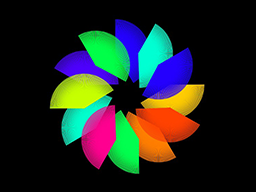
Fan Flower
When you open a Ancient Chinese fan which looks like a sector, do you ever think of getting many of them and putting the fans together? This example does this for you, and surprising they are arranged in the shape of a beautiful flower!
Attractive Point: Use random colors for the fans. You can run the example for many times, and every time you will see a totally different flower blooming only for you!
---------- Startup ---------- Hide Pen up Move forward 175 Turn left 90 Move forward 40 Turn right 90 Pen down Repeat 12 times Set line color [ Color of hue [ Random of 0 to 255 ] saturation 255 brightness 255 Alpha 255 ] Repeat 75 times Set line width 2 Move forward 100 Move backward 100 Turn right 2 End Pen up Move forward 250 Pen down End
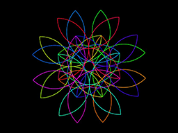
Flower
With a few commands to the turtle, you can create an eight-petaled flower with gradient color. Come and explore this surprisingly short example.
---------- Startup ---------- Hide Pen up Move backward 50 Turn left 90 Move forward 125 Turn right 90 Pen down Set line width 2 Set value of @dynamic@ to 0 Repeat 8 times Turn right 45 Repeat 7 times Repeat 90 times Set value of @dynamic@ to [ $dynamic$ + [ 256 / 5040 ] ] Set line color [ Color of hue $dynamic$ saturation 255 brightness 255 Alpha 255 ] Move forward 5 Turn right 2 End Turn right 90 End End
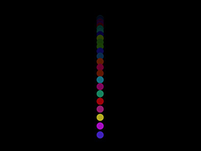
Gravity Ball
A colorful ball is dropping down to the ground! Want to see how it speeds up before hit the ground? Come and pick this example.
---------- Startup ---------- Hide Pen up Move to x [ $screen width$ / 2 ] y [ [ $screen height$ / 2 ] - 250 ] Set value of @origin x@ to [ [ $screen width$ / 2 ] - 50 ] Set value of @origin y@ to [ [ $screen height$ / 2 ] - 300 ] Set line width 0 Loop forever Turn left 180 Loop @dynamic@ from 1 to 30 step 1 Set fill color [ Color of hue [ Random of 0 to 255 ] saturation [ Random of 190 to 255 ] brightness [ Random of 190 to 255 ] Alpha 255 ] Move forward $dynamic$ Ellipse at center x $current x$ y $current y$ radius h 10 v 10 Set fill color #RGB(0) HSB(000000) A(14)# Rect at x $origin x$ y $origin y$ width 100 heigth 700 End Turn left 180 Loop @dynamic@ from 30 to 1 step -1 Set fill color [ Color of hue [ Random of 0 to 255 ] saturation [ Random of 190 to 255 ] brightness [ Random of 190 to 255 ] Alpha 255 ] Move forward $dynamic$ Ellipse at center x $current x$ y $current y$ radius h 10 v 10 Set fill color #RGB(0) HSB(000000) A(14)# Rect at x $origin x$ y $origin y$ width 100 heigth 700 End End
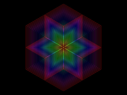
Hexagon
Create a colorful hexagram inside a hexagon. This code is extremely short and easy for starters.
---------- Startup ---------- Hide Loop @i@ from 175 to 10 step -5 Set line color [ Color of hue [ [ $i$ / 175 ] X 256 ] saturation 255 brightness 255 Alpha 255 ] Repeat 6 times Repeat 6 times Move forward $i$ Turn left 60 End Turn left 60 End End
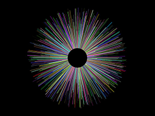
Modern
During the Modern Age, buildings coming out from every corner in the world, breaking the earth surface. You can experience the growing from this small world model.
Attractive Point: Colorful "buildings" of different height.
---------- Startup ---------- Hide Set line width 2 Loop forever Pen up Go home Turn right [ Random of 0 to 360 ] Set line color [ Random color ] Move forward 60 Pen down Move forward [ Random of 0 to 250 ] End
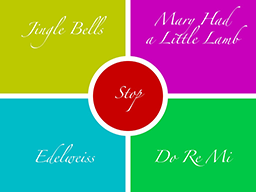
Music Bar
This is a Music Bar where you can choose songs you like and listen to them. We now provide four songs:
Jingle Bells, Mary Had a Little Lamb, Edelweiss, Do Re Mi
After you start the program, click on the songs' names to play them. Click on "Stop" to stop any song now playing.
---------- Startup ---------- Turn off auto refresh Hide Set line width 20 Set font !Zapfino! Set font size 43 Set value of @half x@ to [ $current x$ / 2 ] Set value of @one half x@ to [ $screen width$ - $half x$ ] Set value of @half y@ to [ $current y$ / 3 ] Set value of @one half y@ to [ $screen height$ - $half y$ ] Set value of @width@ to [ $current x$ + 50 ] Set value of @height@ to [ $current y$ + 50 ] Set fill color #RGB(BCC800) HSB(2DFFC8) A(FF)# Rect at x -50 y -50 width $width$ heigth $height$ Write "Jingle Bells" at center x $half x$ y $half y$ Set fill color #RGB(C800BC) HSB(D7FFC8) A(FF)# Rect at x $current x$ y -50 width $width$ heigth $height$ Write "Mary Had" at center x $one half x$ y [ $half y$ - 38 ] Write "a Little Lamb" at center x $one half x$ y [ $half y$ + 38 ] Set fill color #RGB(BCC8) HSB(82FFC8) A(FF)# Rect at x -50 y $current y$ width $width$ heigth $height$ Write "Edelweiss" at center x $half x$ y $one half y$ Set fill color #RGB(C846) HSB(64FFC8) A(FF)# Rect at x $current x$ y $current y$ width $width$ heigth $height$ Write "Do Re Mi" at center x $one half x$ y $one half y$ Set fill color #RGB(C80000) HSB(00FFC8) A(FF)# Ellipse at center x $current x$ y $current y$ radius h 150 v 150 Write "Stop" at center x $current x$ y $current y$ Split "+E8, +E8, +E4, +E8, +E8, +E4, +E8, +G8, +C8., +D16, +E2, +F8, +F8, +F8., +F16, +F8, +E8, +E8, +E16, +E16, +E8, +D8, +D8, +C8, +D4, +G4, +E8, +E8, +E4, +E8, +E8, +E4, +E8, +G8, +C8., +D16, +E2, +F8, +F8, +F8., +F16, +F8, +E8, +E8, +E16, +E16, +G8, +G8, +F8, +D8, +C2" to list {music 0} with delimiter "," Split "E8., D16, C8, D8, E8, E8, E4, D8, D8, D4, E8, G8, G4, E8., D16, C8, D8, E8, E8, E8, E8, D8, D8, E8, D8, C2" to list {music 1} with delimiter "," Split "E2, G4, +D2., +C2, G4, E2, E4, E4, F4, G4, A2., G2., E2, G4, +D2., +C2, G4, F2., E2, G4, G4, A4, B4, +C2., +C2., +D2, G4, B4, A4, G4, E2, G4, +C2., A2, +C4, +D2, +C4, B2., G2., E2, G4, +D2., +C2, G4, F2., E2, G4, G4, A4, B4, +C2., +C2." to list {music 2} with delimiter "," Split "C4., D8, E4., C8, E4, C4, E2, D4., E8, F8, F8, E8, D8, F1, E4., F8, G4., E8, G4, E4, G2, F4., G8, A8, A8, G8, F8, A1, G4., C8, D8, E8, F8, G8, A1, A4., D8, E8, F#8, G8, A8, B1, B4., E8, F#8, G#8, A8, B8, +C2., B8, Bb8, A4, F4, B4, G4, +C1" to list {music 3} with delimiter "," Set value of @choosing@ to 0 Set value of @index@ to 0 Set value of @playing@ to False Refresh Loop forever If $playing$ If [ $choosing$ = 0 ] Play music [ $index$ th of list {music 0} ] Set value of @index@ to [ [ $index$ + 1 ] mod [ Length of list {music 0} ] ] End If [ $choosing$ = 1 ] Play music [ $index$ th of list {music 1} ] Set value of @index@ to [ [ $index$ + 1 ] mod [ Length of list {music 1} ] ] End If [ $choosing$ = 2 ] Play music [ $index$ th of list {music 2} ] Set value of @index@ to [ [ $index$ + 1 ] mod [ Length of list {music 2} ] ] End If [ $choosing$ = 3 ] Play music [ $index$ th of list {music 3} ] Set value of @index@ to [ [ $index$ + 1 ] mod [ Length of list {music 3} ] ] End End End---------- When touch begin ---------- Set value of @current touch x@ to $touch x$ Set value of @current touch y@ to $touch y$ Set value of @playing@ to False If [ [ Distance from x $current touch x$ y $current touch y$ to x $current x$ y $current y$ ] > 150 ] Set value of @index@ to 0 If [ Is x $current touch x$ y $current touch y$ in rect x 0 y 0 w $current x$ h $current y$ ] Set 120 beats per minute Set value of @choosing@ to 0 End If [ Is x $current touch x$ y $current touch y$ in rect x $current x$ y 0 w $current x$ h $current y$ ] Set 90 beats per minute Set value of @choosing@ to 1 End If [ Is x $current touch x$ y $current touch y$ in rect x 0 y $current y$ w $current x$ h $current y$ ] Set 120 beats per minute Set value of @choosing@ to 2 End If [ Is x $current touch x$ y $current touch y$ in rect x $current x$ y $current y$ w $current x$ h $current y$ ] Set 150 beats per minute Set value of @choosing@ to 3 End Set value of @playing@ to True End
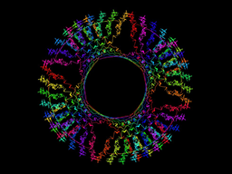
Pilgrim
The turtle walks in a strange trail. You may not realize what it is drawing at first. However, after the drawing is finished, you will find out that it seems like many pilgrims looking at the same place. Isn't that amazing?
Note: This example is a bit abstract. You may disagree whether if looks like pilgrims. But one thing is sure that the program itself is amazing.
---------- Startup ---------- Hide Pen up Turn left 90 Move forward 275 Turn right 90 Pen down Loop @dynamic@ from 0 to 4680 step 1 Set line color [ Color of hue [ [ $dynamic$ / 4680 ] X 256 ] saturation 255 brightness 255 Alpha 255 ] Move forward 15 Turn right [ [ sin ( [ $dynamic$ ^ 2 ] ) ] X 180 ] End
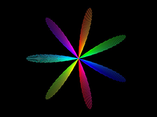
Propeller
Here is a way to draw a colorful propeller. It's easy, very easy, but most people will never think of this kind of way to draw things. If you don't understand how it is drawn, open this example and have a look!
---------- Startup ---------- Hide Loop @i@ from 0 to 180 step 1 Set line color [ Color of hue [ [ $i$ / 180 ] X 255 ] saturation 255 brightness 255 Alpha 255 ] Go home Turn right $i$ Move forward [ 300 X [ sin ( [ $i$ X 7 ] ) ] ] End
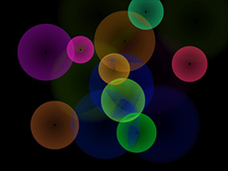
Ripple
Click on the screen to form the ripples one by one like what you do on the water surface.
Attractive Point: Amazing colorful ripples.
Note: You can form two ripples next to each other and see what effect will be shown as the two ripples meet.
---------- Startup ---------- Hide Refresh Turn off auto refresh Set value of @width@ to 5 Set value of @max@ to 100 Set line width $width$ Loop forever Clear by color #RGB(0) HSB(000000) A(23)# Loop @index@ from 0 to [ [ Length of list {x} ] - 1 ] step 1 Replace $index$ th of list {size} with [ [ $index$ th of list {size} ] + $width$ ] If [ [ $index$ th of list {size} ] > $max$ ] Remove $index$ th of list {x} Remove $index$ th of list {y} Remove $index$ th of list {size} Remove $index$ th of list {hue} Remove $index$ th of list {saturation} Remove $index$ th of list {brightness} Else Set line color [ Color of hue [ $index$ th of list {hue} ] saturation [ $index$ th of list {saturation} ] brightness [ $index$ th of list {brightness} ] Alpha [ 255 X [ [ $max$ - [ $index$ th of list {size} ] ] / $max$ ] ] ] Ellipse at center x [ $index$ th of list {x} ] y [ $index$ th of list {y} ] radius h [ $index$ th of list {size} ] v [ $index$ th of list {size} ] End End Refresh End---------- Blockette Add ---------- Add $touch x$ to list {x} Add $touch y$ to list {y} Add 0 to list {size} Add [ Random of 0 to 255 ] to list {hue} Add [ Random of 200 to 255 ] to list {saturation} Add [ Random of 200 to 255 ] to list {brightness} ---------- When touch begin ---------- Perform (Add) ---------- When touch move ---------- Perform (Add)
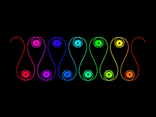
Slalom Scroll
Have you ever experienced a slalom? It is a race asking you to ski past several poles placed on the snow. No? It doesn't matter, as you can have a look at it in this example. You can see colorful trails in the snow, from right to the left, gently passed the poles. You can even imagine that you are the one who is in the ski field, trying to get the first prize!
---------- Startup ---------- Hide Pen up Move forward 100 Turn right 90 Move forward 320 Turn left 109 Pen down Set line width 2 Loop @dynamic@ from -15 to 1996 step 1 Set line color [ Color of hue [ [ [ $dynamic$ + 15 ] / 2012 ] X 256 ] saturation 255 brightness 255 Alpha 255 ] Move forward 10 Turn right [ 90 X [ sin ( $dynamic$ ) ] ] End
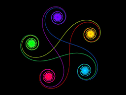
Soft Pentacle
Pentacles are seen everywhere, but have you ever seen a soft pentacle whose horns can be bended? Never? Please have a look at this example as soon as possible!
---------- Startup ---------- Hide Pen up Move backward 50 Turn right 90 Move forward 40 Turn left 90 Pen down Set line width 2 Loop @dynamic@ from 1 to 1800 step 1 Set line color [ Color of hue [ [ [ $dynamic$ - 1 ] / 1800 ] X 256 ] saturation 255 brightness 255 Alpha 255 ] Move forward 25 Turn right [ $dynamic$ + 0.1 ] End
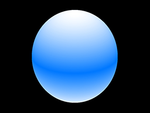
Sphere
Come and see how a sphere grows from the bottom. A round shape with gradient color from white to blue finally appears on your screen, looking real. You can experience the 3-D power of this wonderful app through the drawing of this beautiful smooth shape.
---------- Startup ---------- Hide Set value of @size@ to 255 Set line width 2 Set value of @dynamic@ to 0 While [ $dynamic$ <= [ $size$ X 2 ] ] do Set line color [ Color of hue 150 saturation [ 255 - [ abs ( [ $size$ - $dynamic$ ] ) ] ] brightness 255 Alpha 255 ] Set value of @width@ to [ sqrt ( [ [ $size$ X $size$ ] - [ [ $size$ - $dynamic$ ] X [ $size$ - $dynamic$ ] ] ] ) ] Set value of @height@ to [ [ 100 / $size$ ] X $width$ ] Ellipse at center x $current x$ y [ $current y$ + [ $size$ - $dynamic$ ] ] radius h $width$ v $height$ If [ [ abs ( [ $size$ - $dynamic$ ] ) ] > [ $size$ - 3 ] ] Set value of @dynamic@ to [ $dynamic$ + 0.01 ] Else If [ [ abs ( [ $size$ - $dynamic$ ] ) ] > [ $size$ - 40 ] ] Set value of @dynamic@ to [ $dynamic$ + 0.2 ] Else Set value of @dynamic@ to [ $dynamic$ + 0.5 ] End End End
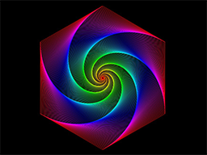
Spinning
What will happen if six turtles at the corners of a hexagon each moving towards the one to its left? This example will show you the result!
Attractive Point: Amazing spire with gradient color.
Note: This example is used for the Dynamic Art for iOS icon.
---------- Startup ---------- Hide Turn off auto refresh Set value of @points@ to 6 Set value of @size@ to 300 Set value of @dist@ to 5 Set value of @h@ to 255 Pen up Repeat $points$ times Move forward $size$ Add $current x$ to list {x list} Add $current y$ to list {y list} Move backward $size$ Turn left [ 360 / $points$ ] End While [ [ Distance from x [ 0 th of list {x list} ] y [ 0 th of list {y list} ] to x [ 1 th of list {x list} ] y [ 1 th of list {y list} ] ] > $dist$ ] do Set line color [ Color of hue $h$ saturation 255 brightness 255 Alpha 255 ] Set value of @h@ to [ $h$ - 2 ] Polygen by x {x list} y {y list} Loop @index@ from 0 to [ $points$ - 1 ] step 1 Pen up Move to x [ $index$ th of list {x list} ] y [ $index$ th of list {y list} ] Heading to x [ [ [ $index$ + 1 ] mod $points$ ] th of list {x list} ] y [ [ [ $index$ + 1 ] mod $points$ ] th of list {y list} ] Pen down Move forward $dist$ Replace $index$ th of list {x list} with $current x$ Replace $index$ th of list {y list} with $current y$ End Refresh End
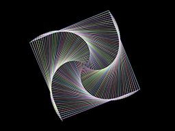
Spire
A basic and amazing way of using one turtle to form four spiral arms at the same time. With just several blocks, you can enjoy an attractive spire formed by only straight lines.
Attractive Point: Particularly chosen colors which are picked randomly but do not look messy.
---------- Startup ---------- Hide Set line width 2 Set value of @length@ to 0 While [ $length$ <= 450 ] do Set line color [ Color of red [ Random of 150 to 255 ] green [ Random of 150 to 255 ] blue [ Random of 150 to 255 ] Alpha 255 ] Set value of @length@ to [ $length$ + 2 ] Move forward $length$ Turn left 90.5 End
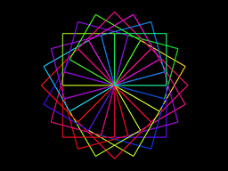
Square Flower
You put many same squares and make one of their corners at the same point. What will you see? A bunch of squares? No, you will see a flower, a square flower!
---------- Startup ---------- Hide Set line width 3 Repeat 24 times Set line color [ Color of hue [ Random of 0 to 255 ] saturation 255 brightness 255 Alpha 255 ] Turn right 15 Repeat 4 times Move forward 200 Turn right 90 End End
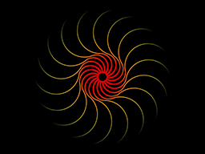
Sun
A sun rises on your screen, made of beautiful, elegant curves. It is red and orange, in order to remind you of the delightful days filled with warm sunshine.
Attractive Point: Use turtle movement to create trails with changing width, direction and color.
---------- Startup ---------- Hide Set value of @home x@ to $current x$ Set value of @home y@ to $current y$ Repeat 18 times Pen up Move to x $home x$ y $home y$ Turn right 20 Move forward 20 Pen down Set value of @line width@ to 9 Set value of @green@ to -100 Set value of @step@ to [ 255 / 175 ] Repeat 150 times Set line width $line width$ Set line color [ Color of red 255 green $green$ blue 0 Alpha 255 ] Move forward 1 Turn left 1 Set value of @line width@ to [ $line width$ - 0.03 ] Set value of @green@ to [ $green$ + $step$ ] End Repeat 150 times Set line width $line width$ Set line color [ Color of red 255 green $green$ blue 0 Alpha 255 ] Move forward 2 Turn right 1 Set value of @line width@ to [ $line width$ - 0.03 ] Set value of @green@ to [ $green$ + $step$ ] End End
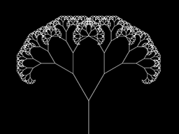
Tree
This is a basic example drawing a fractal. The fractal forms with many branches each dividing into two new branches, so it looks like a tree.
---------- Startup ---------- Hide Set value of @step@ to 1.5 Set value of @distance@ to 200 Set value of @angle@ to 30 Pen up Move backward 350 Pen down Perform (Forward) ---------- Blockette Forward ---------- If [ $distance$ > 2 ] Move forward $distance$ Set value of @distance@ to [ $distance$ / $step$ ] Turn left $angle$ Perform (Forward) Turn right [ $angle$ X 2 ] Perform (Forward) Turn left $angle$ Set value of @distance@ to [ $distance$ X $step$ ] Move backward $distance$ End
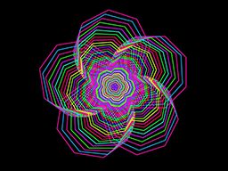
Wintersweet
Wintersweet is a kind of five-petaled flower blooming in the winter. This example use big and small wintersweet flowers putting together, and create an amazing image of this kind of flower.
---------- Startup ---------- Hide Set line width 3 Set value of @i@ to 120 While [ $i$ > 5 ] do Set line color [ Color of hue [ Random of 0 to 255 ] saturation 255 brightness 255 Alpha 255 ] Repeat 5 times Repeat 8 times Move forward $i$ Turn right 45 End Turn right 72 End Turn left [ $i$ / 40 ] Set value of @i@ to [ $i$ X 0.95 ] End